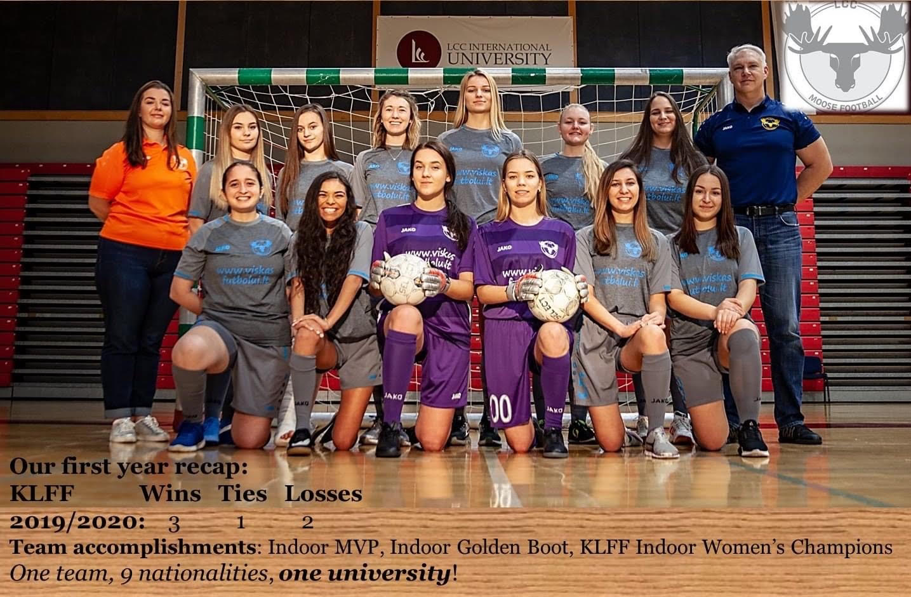

Skills improvmant
I was shocked...
Match after match we were scoring,improving and adoring playing football.I even remember that after two matches I scored my first goal.It was my little personal victory.I realized that nothing is impossible.Even if you have never doing something but you are willing to,your dream will definitely come true you just need some time and effort.
Body changes

WOW...
If to be honest,I wasn’t a skinny lady when I came to LCC at all.I can say that I was a small dumpling who liked to do sports but still liked delicious food.I couldn’t lose weight within all my childhood except moments when I was sick.However a mystery happened.When I came home during my fall break my parents were shocked.I lost 7 or 8 kg in 2 months or even less.It was my second little personal victory.I don’t understand how but football helped me with this and be sure that if it helped me with this issue it will definitely help you if you need to.
First place

Bingo..
Finally,we got to the final and you know what,our enemy was the team we lost.They were extremely relaxed and confident.They were sure that if they defeated us last time they will do the some this time.However,they missed one point,they saw a totally different team opposite them.So,guess what?We won...Aaaaa.We the team where the majority of players haven’t been playing football before,won the team full of professional players.That was an unbelievable feeling.